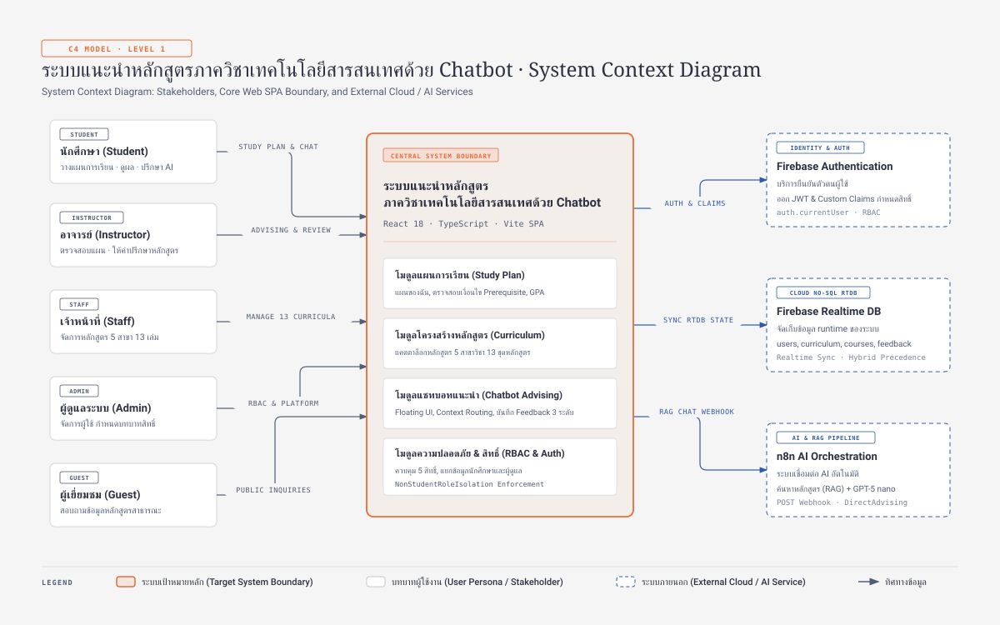

Stakeholders & Personas
ผู้ใช้งาน 5 บทบาท (Actors)
- นักศึกษา (Student): วางแผนการเรียน 4 ปี ตรวจสอบวิชาบังคับก่อน และสนทนากับ Chatbot
- อาจารย์ (Instructor): ตรวจสอบและให้คำปรึกษาแผนการศึกษาของนักศึกษาในสังกัด
- เจ้าหน้าที่ (Staff): ดูแลและปรับปรุงข้อมูลแคตตาล็อกหลักสูตร 5 สาขา 13 ชุด
- ผู้ดูแลระบบ (Admin): กำหนดบทบาทสิทธิ์ (RBAC) และจัดการการทำงานส่วนกลาง
- ผู้เยี่ยมชม (Guest): สอบถามข้อมูลและสำรวจหลักสูตรสาธารณะทั่วไป
System Boundary
ระบบแกนกลาง (Web SPA)
- Client-Side SPA Architecture: พัฒนาด้วย React 18, TypeScript, Vite และ Tailwind CSS
- Hybrid Precedence Storage: ลำดับความสำคัญของข้อมูลหลักสูตร (Curriculum RTDB > Course RTDB > Static Master Catalog 13 ชุด)
- NonStudentRoleIsolation: แยกบริบทข้อมูลนักศึกษาออกจากบทบาทแอดมินและอาจารย์อย่างสมบูรณ์
- Floating Advising UI: แชทบอทให้คำปรึกษาพร้อมการประเมิน 3-point Scale Feedback
External & AI Ecosystem
บริการภายนอก (Cloud & AI)
- Firebase Authentication: ระบบลงชื่อเข้าใช้ ออก JWT และแนบ Custom Claims ควบคุมบทบาท
- Firebase Realtime Database: NoSQL Cloud DB ซิงค์สถานะผู้ใช้และผลการประเมินแชทแบบเรียลไทม์
- n8n AI Orchestration: รันเวิร์กโฟลว์ RAG ค้นหาข้อมูลหลักสูตรและส่งต่อให้ Google Gemini ประมวลผลคำตอบ